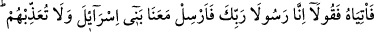
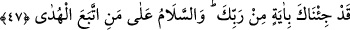

Şeyh Sa’dî de şöyle der:
Madem ki dost seni muhâfaza eder
Düşmanın sana zarar vermesi muhaldir
Bil ki Allah, kendisine lâyık bir şekilde kulları ile berâberdir. Ancak bu beraberliğin
mâhiyetini sâdece gözlerine müşâhede nûru sürmesi çekilenler bilir. Ne var ki zâtî
vahdeti müşâhede etmek, maiyyeti/Hakk’ın beraberliğini müşâhededen daha üstün ve
daha yücedir. Onun için kâmil insanlar maiyyet makamında kalmaya râzı olmazlar,
bilakis tam bir fenâ ile vahdet makamına ulaşmayı taleb ederler.
Sonra yine bil ki Mûsâ ve Hârun (a.s.) tam bir kullukla Rablerine sığınmışlar, O da
yardımı ve korumasıyla onların imdâdına yetişmiştir.
Fakih Ebu’l-Hasan der ki: “Bir zamanlar Bağdad’da bir kıtlık oldu. Halk toplandı ve
şikâyetlerini bir dilekçe ile Vezir Ali b. Îsâ’ya sundular. Vezir dilekçeyi okudu ve
arkasına şöyle yazdı: “Ben gökyüzü değilim ki size su vereyim, yeryüzü değilim ki sizi
doyurayım, siz iyisi mi Bârî’inize (Rabbinize) mürâcaat edin!”
Ebu’l-Muîn der ki: “Hristiyanlardan birine İncil’de dikkatini çeken en güzel âyeti
sordum. Şu beş cümledir dedi:
1. “Benden iste, vereyim.
2. Bana şükret, nîmetimi artırayım.
3. Bana yönel, Ben de sana yöneleyim.
4. Bana yaklaş, Ben de sana yaklaşayım.
5. Bana dünyada itâat et, Ben de dünyada ve âhirette isteklerini yerine getireyim.”
Mesnevî’de şöyle der:
Hak buyurdu: “İster fâsık ol ister putperest,
Mâdem ki bana duâ ettin duânı kabul ederim.
Onun için duâdan hiç çekinme; hiç usanma.
Duâ, nihayet seni gulyabanî nefsin elinden kurtarır.”
47. Haydi, ona gidin de deyin ki: Biz, senin Rabbinin elçileriyiz. İsrailoğulları’nı